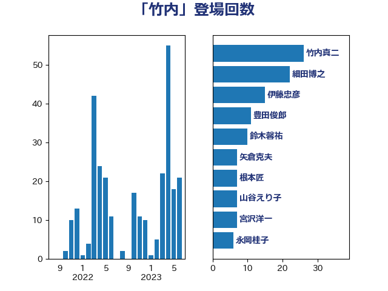

単語「竹内」

| 竹内真二 | 公明党 | 26 回 |
| 豊田俊郎 | 自由民主党 | 11 回 |
| 鈴木馨祐 | 自由民主党 | 10 回 |
| 金田勝年 | 自由民主党 | 9 回 |
| 山谷えり子 | 自由民主党 | 7 回 |
| 矢倉克夫 | 公明党 | 7 回 |
| 山本順三 | 自由民主党 | 6 回 |
| 根本匠 | 自由民主党 | 6 回 |
| 義家弘介 | 自由民主党 | 6 回 |
| 足立康史 | 日本維新の会 | 6 回 |
| 伊藤岳 | 日本共産党 | 5 回 |
| 松村祥史 | 自由民主党 | 5 回 |
| 細田博之 | 自由民主党 | 5 回 |
| 小西洋之 | 立憲民主党 | 4 回 |
| 山東昭子 | 自由民主党 | 4 回 |
| 平木大作 | 公明党 | 4 回 |
| 竹内譲 | 公明党 | 4 回 |
| 赤羽一嘉 | 公明党 | 4 回 |
| 長島昭久 | 自由民主党 | 4 回 |
| 長谷川岳 | 自由民主党 | 4 回 |
| 太田房江 | 自由民主党 | 3 回 |
| 宮沢洋一 | 自由民主党 | 3 回 |
| 斉藤鉄夫 | 公明党 | 3 回 |
| 末松信介 | 自由民主党 | 3 回 |
| 堀井巌 | 自由民主党 | 2 回 |
| 杉尾秀哉 | 立憲民主党 | 2 回 |
| 田村憲久 | 自由民主党 | 2 回 |
| 石川博崇 | 公明党 | 2 回 |
| 舟山康江 | 国民民主党 | 2 回 |
| 若宮健嗣 | 自由民主党 | 2 回 |
| 茂木敏充 | 自由民主党 | 2 回 |
| 野村哲郎 | 自由民主党 | 2 回 |
| 野田国義 | 立憲民主党 | 2 回 |
| 金子恭之 | 自由民主党 | 2 回 |
| 長峯誠 | 自由民主党 | 2 回 |
| 青木一彦 | 自由民主党 | 2 回 |
| あべ俊子 | 自由民主党 | 1 回 |
| 下野六太 | 公明党 | 1 回 |
| 中谷一馬 | 立憲民主党 | 1 回 |
| 中野洋昌 | 公明党 | 1 回 |
| 丸川珠代 | 自由民主党 | 1 回 |
| 前川清成 | 日本維新の会 | 1 回 |
| 吉田とも代 | 日本維新の会 | 1 回 |
| 吉田久美子 | 公明党 | 1 回 |
| 吉田忠智 | 立憲民主党 | 1 回 |
| 室井邦彦 | 日本維新の会 | 1 回 |
| 小宮山泰子 | 立憲民主党 | 1 回 |
| 山口俊一 | 自由民主党 | 1 回 |
| 斎藤嘉隆 | 立憲民主党 | 1 回 |
| 新妻秀規 | 公明党 | 1 回 |
| 松野博一 | 自由民主党 | 1 回 |
| 林芳正 | 自由民主党 | 1 回 |
| 森屋宏 | 自由民主党 | 1 回 |
| 永岡桂子 | 自由民主党 | 1 回 |
| 河西宏一 | 公明党 | 1 回 |
| 浜口誠 | 国民民主党 | 1 回 |
| 海江田万里 | 立憲民主党 | 1 回 |
| 渡辺博道 | 自由民主党 | 1 回 |
| 玄葉光一郎 | 立憲民主党 | 1 回 |
| 羽生田俊 | 自由民主党 | 1 回 |
| 舞立昇治 | 自由民主党 | 1 回 |
| 若松謙維 | 公明党 | 1 回 |
| 里見隆治 | 公明党 | 1 回 |
| 鈴木俊一 | 自由民主党 | 1 回 |
| 高木かおり | 日本維新の会 | 1 回 |
| 高橋千鶴子 | 日本共産党 | 1 回 |